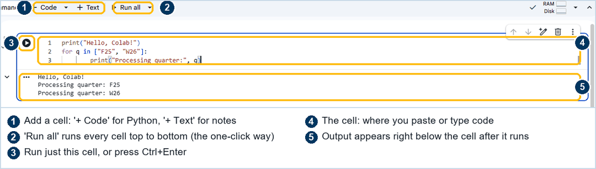
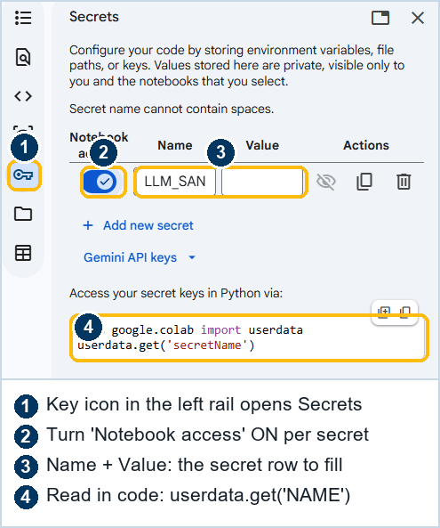
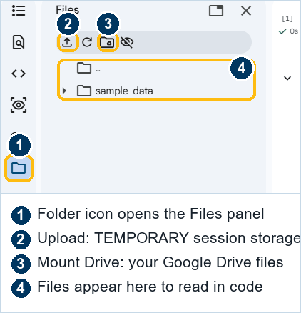

A five-minute primer
New to Google Colab? Start here.
Colab is a free tool from Google that lets you run code in your browser, with nothing to install. The no-code path uses it because the AI helper inside it can write the code for you. You only need to know a few things first, and they take about five minutes. Nothing here can break anything.
First, the big picture
What Colab actually is
Think of a Colab notebook as a document that can also run. It mixes two kinds of blocks: text (notes, headings) and code (small programs). You read down the page, and when you reach a code block you press a button to run it. Whatever it produces, a number, a table, a chart, appears right underneath.
It runs on a computer Google lends you for the session, so your own laptop does nothing but show the page. When you close the tab, that borrowed computer goes away. Your notebook, and anything you saved to your Google Drive, stays.
Step one
Open a notebook
Go to colab.research.google.com and sign in with a Google account. Choose New notebook (or open the one this guide gives you on the no-code path). You will see a mostly empty page with one empty code block, called a cell, waiting for you.
Step two
Cells, and how to run them
A cell is one of those blocks. A code cell has a small play button on its left. Click it, or press Shift and Enter together, to run that cell. A spinner turns while it works, then the result appears below it. Run cells top to bottom, in order, the way you would read a recipe.

Two menu items are worth knowing from the start. Runtime → Run all runs every cell from the top, which is how you run the whole pipeline at once. Runtime → Restart session gives you a clean slate if something gets confused. That is genuinely all the notebook mechanics you need.
Step three
The Secrets panel (for your key)
The pipeline needs an API key, and a key is like a password, so you do not paste it into a cell where it would be visible and saved. Colab has a safe place for it. On the left edge there is a key icon; click it to open Secrets. You add your key once, give it a name, and turn on "Notebook access." The code then reads it by name, and the key itself never shows up in the notebook.

Step four
The Files panel (for your data)
To work on your own spreadsheet, you give Colab the file. On the left edge there is a folder icon; click it to open Files, then use the upload button to add your CSV or spreadsheet for the session. Like the borrowed computer, uploaded files disappear when the session ends, which for protected data is a feature, not a bug.

That is the whole primer
You are ready
Open a notebook, run cells top to bottom, keep your key in Secrets, and upload data in Files. That is everything the no-code path assumes you know. The AI helper handles the actual code.